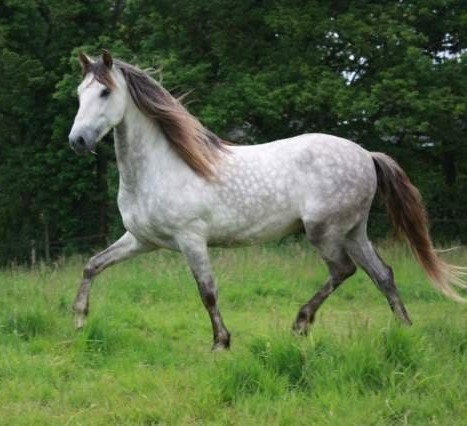

En mémoire 10Jballar
En 2010, après cinq ans sans cheval, Djb, véritable coup de cœur, fut mon compagnon de vie pendant douze ans. Grand ami d'Archy et tonton des pouliches, il marque ceux qui croisent sa route. Guerrier, maître d'école et révélateur, il bouleverse mes certitudes, laisse son empreinte et transforme à jamais ma vision du cheval.
Voir les 10 photos